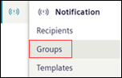
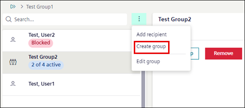

Creating and Managing Groups
This section provides step-by-step instructions on how to create, update, and remove group from the Flex Client.
Create Group
- In the top navigation bar, select System.
- In the left side bar, click .
- Navigate to Notification > Groups.

- The list of groups displays.
- Click Create.
- Enter Name and Description of the group.
- Click Save.
- The new group is added to the tiles view.
Edit Group Details
- The group details to be modified is present in Notification > Groups.
- Select the group or search the group name in Search field.
- Click and select Edit from the menu options.
- Modify the group Name and Description.
- Click Save.
- The group details are modified.
Delete Group
- The group to be deleted is present in Notification > Groups.
- Select the group or search the group name in Search field.
- Click and select Delete from the menu options.
- In the confirmation message that displays, click Delete.
- The group is deleted from the list.
Add Recipient to the Group
- The group where recipient needs to be added is present in Notification > Groups.
- Select the group or search the group name in Search field.
- Click and select Add recipient from the menu options.
- The Add recipient dialog box displays with the list of recipients.
- Select the checkbox corresponding to the recipient you want to add to the group and click Create.
- The selected recipients are added in the group.
Add a Group to Another Group
- The group to add in another group is present in Notification > Groups.
- Select the group or search the group name in Search field.
- Click the group tile to open the group details.
- List of group recipient displays.
- Click and select Create group.
- The Create group dialog box displays with the list of groups.
- Select the checkbox corresponding to the group you want to add to the group and click Create.
- The selected groups are added in the group.

Remove Recipient / Group from an Existing Group
- Recipient or group to be removed from an existing group is present in Notification > Groups.
- Select the group or search for a group name in Search field.
- Click the group tile to open the group details.
- List of recipients in the group display.
- Select the specific recipient or group to be removed and click Remove.
- In the confirmation message that displays, click Remove.
- The recipient or group is removed from the group.
View Recipient Groups of Distributed Systems in Flex Client
- Systems are in a distributed environment.
- Recipients are present in distributed systems
- In Flex Client, the Application View of each system is visible
- In the top navigation bar select System.
- To view recipients of System 1 perform the following steps:
- In the System Browser, select the Application View (System [X])

- In the left side bar, click .
- Navigate to Notification > Groups.
- System1 recipients are displayed. You can view and modify the recipients information of System 1.
- To switch to a different system and view or edit recipients of System 2 perform the following steps:
- In the left side bar, click Hierarchies and in the System Browser select Application View (System 2).

- In the left side bar, click .
- Navigate to Notification > Groups.
- System 2 recipient groups are displayed. You can view and modify the recipient group information of System 2.